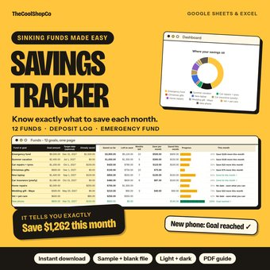
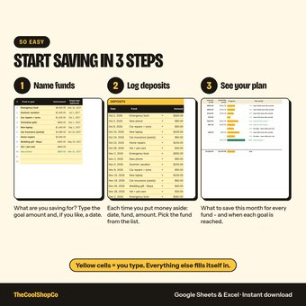
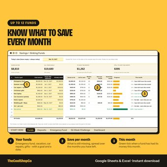
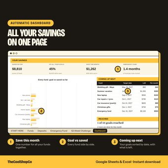
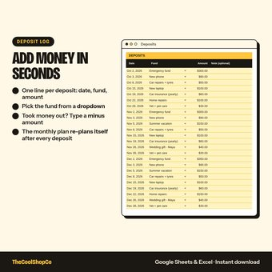
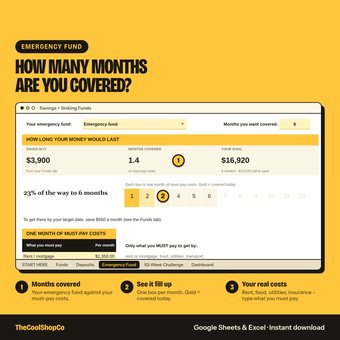
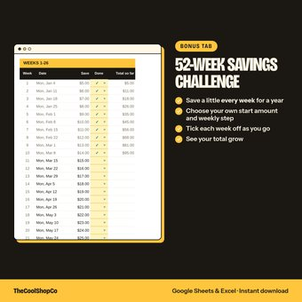
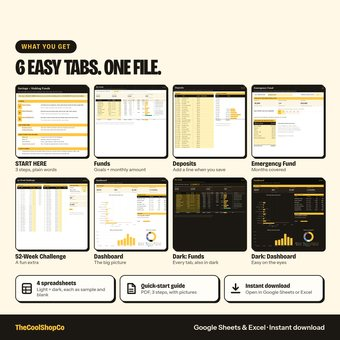
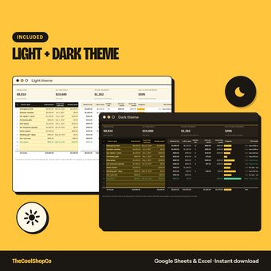
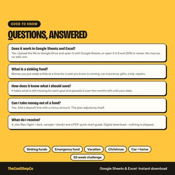

← all 20 listings · Budget Spreadsheets










▶ video
Savings tracker spreadsheet for Google Sheets and Excel: the list of sinking funds with progress bars, a savings donut chart and what to save this month ($1,262 in the sample). Yellow and black design.
TheCoolShopCo
Savings Tracker Spreadsheet for Google Sheets & Excel, Sinking Funds Tracker, Savings Goal Planner, Emergency Fund, 52 Week Challenge
$5.99
Digital download — 5 file(s) · Designed by TheCoolShopCo
Buy it nowAdd to basket
Files you get
- Light theme, empty - the buyer's working copy (Savings-Sinking-Funds-Tracker_Light_BLANK.xlsx)
- Light theme filled with fictional sample data (Savings-Sinking-Funds-Tracker_Light_SAMPLE.xlsx)
- Dark theme, empty (Savings-Sinking-Funds-Tracker_Dark_BLANK.xlsx)
- Dark theme with sample data (Savings-Sinking-Funds-Tracker_Dark_SAMPLE.xlsx)
- 5-page PDF guide; the last page holds the Google Sheets copy-link line (placeholder until Bob adds the link) (Savings-Sinking-Funds-Tracker_Quick-Start-Guide.pdf)
Savings tracker spreadsheet for Google Sheets & Excel: name your savings goals and sinking funds, log each deposit, and see exactly what to save this month to reach every goal on time.
A sinking funds tracker, savings goal planner, emergency fund calculator and 52 week savings challenge in one easy file.
MADE TO BE EASY
Three steps: name your funds, log your deposits, read your plan. Yellow cells are the only ones you type in. No formulas to touch.
WHAT YOU GET (instant download)
- Savings + Sinking Funds Tracker spreadsheet, light theme - blank copy for your own goals
- The same file filled with sample funds, so you can see how it works
- Dark theme - blank + sample
- PDF quick-start guide (5 pages, with pictures)
4 .xlsx files + 1 PDF. Nothing is shipped.
FEATURES
- Up to 12 funds or goals: emergency fund, vacation, car repairs, Christmas gifts, yearly insurance ...
- Goal amount + target date = the amount to save per month, worked out for you
- The monthly amount re-plans itself after every deposit, so you still arrive on the date
- "This month" check for every fund: a green tick when it has had its money, or how much is still to go
- Deposit log with a fund dropdown; type a minus amount when you take money out
- Progress bar and % for every fund, and for all goals together
- Emergency fund tab: type your must-pay monthly costs and see how many months you are covered
- 52-week savings challenge tab with your own start amount and weekly step
- Dashboard: total saved, what to save this month, goals sorted by date, savings per month chart
- Light + dark theme
HOW IT WORKS
1. Name funds - what are you saving for? Type the goal amount and, if you like, a target date.
2. Log deposits - each time you put money aside: date, fund, amount.
3. See your plan - what to save this month for every fund, and how close each goal is.
WORKS WITH
- Google Sheets (free Google account): upload the file, or use the copy link in the PDF guide
- Microsoft Excel 2016 or newer, and Microsoft 365
No macros, no add-ons. The file uses US dollar formatting; you can switch to your own currency in one click (the guide shows how).
FAQ
What is a sinking fund? Money you put aside a little at a time for a cost you know is coming, so it never hits your budget all at once.
Do I need a target date for every fund? No. Without a date the fund simply adds up; with a date you also get a monthly amount.
Can I use it for one big goal, like a house deposit? Yes - one fund or twelve, it works the same.
Is the 52-week challenge linked to my funds? It is a separate tab. If you want the money counted in a fund too, add a line on Deposits.
Can I get help? Yes. Message us here on Etsy and a real person answers.
DELIVERY
This is a digital download. After payment, Etsy shows the files under Purchases and Reviews (and emails you a link). Because digital files cannot be returned, all sales are final - but if anything is not working, message us and we will fix it.
For personal use. This is a savings planning tool, not financial advice. Sample figures are fictional.
Designed by TheCoolShopCo. Some design elements were created with the help of AI tools and finished by hand.
Tags (13)
Title 133/140 chars · main keyword: savings tracker spreadsheet · materials: Google Sheets, Excel
Honest verdict (round 3): 8/10
9Thumbnail
8Gallery
8Product
8Title+tags+text
8In search grid
Solid, honest product.
Still holding it back: New thumbnail: the yellow SAVINGS TRACKER tile is the loudest of the 12 in its real grid. The sheet text in the window isn't readable at 300 px (the bars and shapes are). Not yet opened in real Sheets or Excel.
In Etsy search for “savings tracker spreadsheet” (32,507 results) — can you spot ours?
Ours is placed at position 3 among the real top results (sort = relevance).

52 Week Savings Challenge Google Sheets Excel, Money Saving Challenge Tracker, 100 Envelope Challenge, Savings Tracker Spreadsheet
3.20 EUR
Etsy result #1

Family Budget Template With Dashboards, Income Expense Tracker Excel, Debt And Bill Tracker, Savings Tracker Spreadsheet, Budgeting.
2.80 EUR
Etsy result #2
Savings Tracker Spreadsheet for Google Sheets & Excel, Sinking Funds Tracker, Savings Goal Planner, Emergency Fund, 52 Week Challenge
$5.99
TheCoolShopCo · Digital download

Savings Tracker Spreadsheet | Control de Ahorros | Bilingual Spanish English | Excel Google Sheets | Financial Planner | Savings Goals
4.99 USD
Etsy result #3

savings tracker spreadsheet, sinking funds, savings goal tracker, investment tracker, personal finances, profit and loss, budget template
3.00 EUR
Etsy result #4

Sinking Funds Tracker | Savings Tracker Spreadsheet Google Sheets & Excel | Sinking Fund Planner, Savings Goals, Monthly Budget 2027
6.99 USD
Etsy result #5

Savings Tracker Spreadsheet, Sinking Funds Tracker, Savings Goal Planner, 52 Week Savings Challenge, Emergency Fund, Google Sheets Excel
8.99 USD
Etsy result #6

Savings Tracker Spreadsheet for Excel and Google Sheets, Savings Goal Tracker with Dashboard, Deposit Log, 52 Week Savings Challenge
3.99 USD
Etsy result #7

ADHD Debt Payoff Tracker Excel & Google Sheets, Debt Snowball, Debt Avalanche, 52 Week Savings Challenge, Savings Tracker Spreadsheet
89.00 MXN
Etsy result #8

52 Week Savings Challenge 2027, Savings Tracker Spreadsheet Google Sheets & Excel, Money Saving Challenge, Savings Goal Tracker Template
5.99 USD
Etsy result #9

Savings Tracker Spreadsheet | Sinking Funds GoogleSheets Template | Dark Mode Digital Savings Goals Planner | Personal Finance Budget
12.00 GBP
Etsy result #10

Savings Tracker Spreadsheet, Sinking Funds Tracker for Excel and Google Sheets, Monthly Savings Goals and Progress
1.99 EUR
Etsy result #11